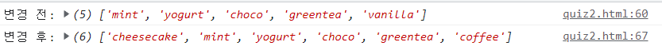

퀴즈2. 배열 연습하기
배열
icecream
에 5가지 맛을 다음 순서대로 저장해주세요.
mint
yogurt
choco
greentea
vanilla
vanilla
맛은 탈락되었습니다.
vanilla
맛을
배열에서 제거
해주세요.
coffee
맛이 새롭게 등장했습니다.
coffee
맛을
배열 맨 마지막에 추가
해주세요.
cheesecake
맛이 새롭게 등장했습니다.
cheesecake
맛을
배열 맨 처음에 추가
해주세요.
출력 결과 예시: 